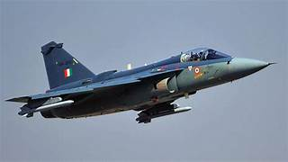
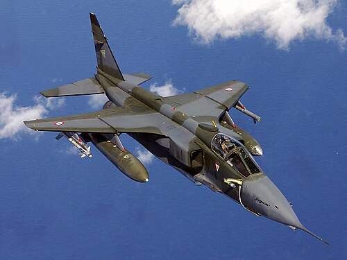
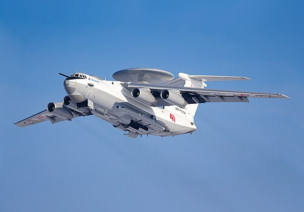
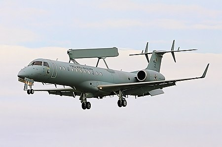
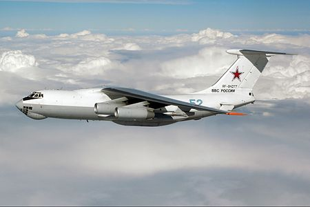

WELCOME TO INDIAN AIRFORCE
Combat Aircraft
HAL TEJAS:-

- HAL Tejas is an indigenously developed light combat aircraft (LCA) designed by Hindustan Aeronautics Limited (HAL) for the Indian Air Force (IAF) and the Indian Navy. It is a single-engine, multirole, fourth-generation fighter aircraft primarily designed for air defense, ground attack, and reconnaissance missions.
- The Tejas program began in the early 1980s as part of India's efforts to develop a modern fighter aircraft and reduce reliance on foreign imports.
- Key features of Tejas include advanced avionics, a powerful General Electric F404 engine, and high maneuverability. The aircraft is equipped with a range of air-to-air and air-to-ground weapons, making it a versatile platform.
- It was inducted into the IAF in 2016 and has since been upgraded with more advanced variants like Tejas Mark 2
SEPECAT Jaguar:-

- The SEPECAT Jaguar is a British-French designed, twin-engine, ground attack and close air support aircraft. It was developed in the 1960s through a collaborative effort between British Aircraft Corporation (BAC) and the French company SEPECAT.
- The Jaguar is known for its ability to perform low-level penetration, strike missions, and reconnaissance. It has a rugged airframe and is equipped with advanced avionics and weapons systems. The aircraft is capable of carrying a wide range of air-to-ground and air-to-air munitions.
- The IAF's version of the Jaguar has been upgraded over the years with modern avionics and weapons systems to enhance its operational capabilities. The Jaguar has proven itself in several conflicts and is a vital part of India’s defense infrastructure.
AEW&CS
Beriev A-50:-

- The Beriev A-50 is a Russian airborne early warning and control (AEW&C) aircraft. Developed by the Beriev Aircraft Company, it is based on the Ilyushin Il-76 transport aircraft. The A-50 is equipped with a large radar dome on top, which provides surveillance, target tracking, and command and control functions.
- It is primarily used by the Russian Air Force for monitoring airspace, directing fighter aircraft, and coordinating military operations.
- The aircraft can detect and track a wide range of aerial and surface targets, including aircraft, missiles, and ships, making it a critical asset for modern military operations. The A-50 has been in service since the late 1980s, with upgraded versions continuing to be used today.
Embraer R-99:-

- The Embraer R-99 is a Brazilian airborne early warning and control (AEW&C) aircraft, based on the Embraer E-99 regional jet. Developed by Embraer, it features a radar system housed in a distinctive nose-mounted radome.
- The R-99 is designed for surveillance, air traffic control, and tactical command and control. It can detect and track a wide range of airborne and surface targets, providing real-time information to support military operations.
- The aircraft is used by the Brazilian Air Force and is equipped with advanced radar and communications systems, enhancing the coordination of air, land, and sea forces.
Tanker
Ilyushin Il-78:-

- The Ilyushin Il-78 is a Russian-built aerial refueling tanker aircraft. Based on the Ilyushin Il-76 transport plane, the Il-78 is designed to refuel military aircraft in flight, extending the range and operational endurance of various fighter jets, bombers, and other aircraft.
- It features a unique refueling system with hose-and-drogue pods mounted on both sides of the fuselage and underwing refueling pods. The Il-78 can carry up to 111 tons of fuel and is capable of refueling multiple aircraft simultaneously.
- The aircraft has been in service since the 1980s and has proven itself as a vital component for air operations in various military engagements.
Helicopters
HAL Dhruv:-

- The HAL Dhruv is an Indian multi-role utility helicopter developed by Hindustan Aeronautics Limited (HAL). It is designed for a variety of roles, including troop transport, search and rescue (SAR), medical evacuation, reconnaissance, and surveillance.
- The Dhruv is powered by twin engines and features a glass cockpit, modern avionics, and a range of advanced systems for both military and civilian applications.
- It is used by the Indian Armed Forces, as well as other countries' military and civil agencies. The Dhruv is known for its versatility, reliability, and capability to operate in diverse environments, from high-altitude regions to coastal areas.
INDIAN AIR FORCE BUDGET
- ₹1.80 lakh crore allocated for capital expenditure across all forces
- Specific IAF allocation of ₹48,600 crore for aircraft and aero engines
- Approval for airborne early warning and control aircraft systems
- Focus on modernization and technological upgrades
- Concerns raised about sufficient capital outlay for regional security challenges